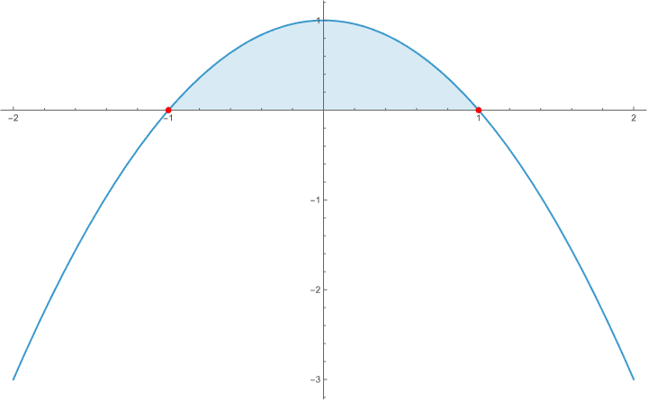

Mathematica 2#
Programska oprema
V tem poglavju boste znanje iz prejšnjega poglavja uporabili na zahtevnejših primerih z več koraki. Pri njih vam bosta pomagali dve navadi:
Vsako nalogo rešite v svoji celici, celico pa začnite s funkcijo
Clearza vse simbole, ki jih v njej definirate (na primerClear[n, stevila]). Mathematica si namreč zapomni vsako definicijo, ki ste jo izvedli, zato lahko simbol iz prejšnje naloge pokvari naslednjo. SClearse celica vsakič izvede enako, tudi ko jo po popravku izvedete znova.Dolge klice razdelite v več vrstic (na primer
graf1spodaj). Manjkajočo vejico ali oklepaj tako najdete hitreje.
Enačbe in neenačbe#
Za reševanje enačb in neenačb boste uporabljali štiri funkcije:
natančne rešitve enačbe ali sistema enačb:
Solve,številski približki rešitev:
NSolve,enačbe, ki niso polinomske, na primer \(\cos x = x\):
FindRoot,neenačbe:
Reduce.
Solve in NSolve sta namenjena predvsem polinomskim enačbam.
Solve#
Enačbe in sisteme enačb rešujete s funkcijo Solve, ki sprejme dva argumenta.
V prvem podate enačbo ali seznam enačb, v drugem pa neznanko ali seznam neznank, ki jih iščete.
Rezultat je seznam rešitev, v katerem je vsaka rešitev seznam prepisovalnih pravil, po eno za vsako neznanko.
Rešitve torej lahko uporabite z operatorjem /., ki izraz na levi izračuna za vsako rešitev posebej:
In[1]:= enacba = x^2 - 5 x + 6 == 0
Out[1]= 6 - 5 x + x^2 == 0
In[2]:= resitve = Solve[enacba, x]
Out[2]= {{x -> 2}, {x -> 3}}
In[3]:= x /. resitve
Out[3]= {2, 3}
In[4]:= enacba /. resitve
Out[4]= {True, True}
Sistem enačb zapišete kot seznam enačb, neznanke pa kot seznam neznank.
V tem primeru bo rezultat ena rešitev, ki določa vse neznanke.
Tu se vidi, zakaj Solve ne vrača samo številskih rešitev: prepisovalna pravila povedo, kateri neznanki pripada katera vrednost.
Če želite dobiti samo vrednosti obeh neznank, lahko prepisovalni pravili uporabite na seznamu neznank:
In[5]:= sistem = {x + y == 5, x - y == 1}
Out[5]= {x + y == 5, x - y == 1}
In[6]:= resitev = Solve[sistem, {x, y}]
Out[6]= {{x -> 3, y -> 2}}
In[7]:= {x, y} /. resitev
Out[7]= {{3, 2}}
In[8]:= Solve[x^3 == 8, x, Reals] (* Samo realne rešitve *)
Out[8]= {{x -> 2}}
Za kvadratno enačbo poznate obrazec, ki rešitve izrazi z osnovnimi računskimi operacijami in kvadratnim korenom.
Za enačbe pete in višjih stopenj takega obrazca v splošnem ni.
V takih primerih Solve rešitev včasih le opiše z izrazom Root.
V prvem delu #1 stoji namesto neznanke, drugi del pa pove, za katero ničlo gre:
In[9]:= Solve[x^5 - x - 1 == 0, x, Reals]
Out[9]= {{x -> Root[-1 - #1 + #1^5 &, 1]}}
NSolve#
Številski približek izračuna funkcija NSolve, ki podobno kot Solve sprejme argument Reals.
Ker NSolve računa s približki (tako kot N), pri vstavljanju rešitve v enačbo ne dobite natanko 0, temveč zelo majhno število:
In[10]:= priblizek = NSolve[x^5 - x - 1 == 0, x, Reals]
Out[10]= {{x -> 1.1673}}
In[11]:= x^5 - x - 1 /. priblizek
Out[11]= {4.44089*10^-16}
FindRoot#
Za druge enačbe, na primer \(\cos x = x\), uporabite FindRoot, ki poišče samo eno rešitev blizu začetnega približka.
Če ima enačba več rešitev, jih poiščete z različnimi začetnimi približki:
In[12]:= resitev = FindRoot[Cos[x] == x, {x, 1}] (* Začetni približek 1 *)
Out[12]= {x -> 0.739085}
Reduce#
Neenačbe rešuje funkcija Reduce, ki vrne pogoj, ki ga mora izpolnjevati spremenljivka:
In[13]:= pogoj = Reduce[x^2 - 5 x + 6 < 0, x]
Out[13]= 2 < x < 3
In[14]:= Reduce[x^2 - 5 x + 6 > 0, x]
Out[14]= x < 2 || x > 3
In[15]:= pogoj /. {{x -> 1}, {x -> 5/2}, {x -> 3}}
Out[15]= {False, True, False}
Delo s seznami#
Funkcijo Table ste spoznali v prejšnjem poglavju.
Seznam za spremenljivko lahko zapišete na več načinov:
Table[⟨izraz⟩, {⟨i⟩, ⟨max⟩}]:⟨i⟩teče od1do⟨max⟩,Table[⟨izraz⟩, {⟨i⟩, ⟨min⟩, ⟨max⟩}]:⟨i⟩teče od⟨min⟩do⟨max⟩,Table[⟨izraz⟩, {⟨i⟩, ⟨min⟩, ⟨max⟩, ⟨korak⟩}]:⟨i⟩teče od⟨min⟩do⟨max⟩s korakom⟨korak⟩,Table[⟨izraz⟩, {⟨i⟩, ⟨seznam vrednosti⟩}]:⟨i⟩zavzame naštete vrednosti.
Izraz v tabeli je lahko karkoli, kar ste spoznali do zdaj, tudi rešitev enačbe ali graf. Prvi spodnji primer vrne rešitve enačbe \(x^2 = a\) za štiri vrednosti parametra \(a\), drugi pa nariše štiri grafe drugega ob drugem.
In[16]:= Table[n^2, {n, 0, 1, 0.25}]
Out[16]= {0., 0.0625, 0.25, 0.5625, 1.}
In[17]:= Table[n^2, {n, {2, 3, 7}}]
Out[17]= {4, 9, 49}
In[18]:= Table[x /. Solve[x^2 == a, x], {a, 1, 4}]
Out[18]= {{-1, 1}, {-Sqrt[2], Sqrt[2]}, {-Sqrt[3], Sqrt[3]}, {-2, 2}}
In[19]:= Table[Plot[x^n, {x, -1, 1}], {n, 1, 4}]
Seznam zaporednih celih števil vrne funkcija Range, Length pa vrne dolžino seznama.
In[20]:= Range[10]
Out[20]= {1, 2, 3, 4, 5, 6, 7, 8, 9, 10}
In[21]:= Length[prastevila]
Out[21]= 15
Posamezen element seznama vrne funkcija Part.
Prvi argument je seznam, drugi pa mesto elementa v njem; elementi so oštevilčeni od 1 naprej.
Običajno jo zapišete krajše, z dvojnimi oglatimi oklepaji za seznamom.
Simbol resitve ima še vedno vrednost iz začetka poglavja, zato v spodnjem primeru resitve[[2]] vrne drugo rešitev enačbe, z /. pa njeno vrednost:
In[22]:= Part[prastevila, 3]
Out[22]= 5
In[23]:= prastevila[[3]]
Out[23]= 5
In[24]:= resitve[[2]]
Out[24]= {x -> 3}
In[25]:= x /. resitve[[2]]
Out[25]= 3
Select#
Funkcija Select iz seznama izbere elemente, ki izpolnjujejo pogoj
Drugi argument funkcije Select je pogoj: funkcija, ki za vsak element vrne True ali False.
Takim funkcijam pravimo predikati.
Imena vgrajenih predikatov se končajo s Q (angl. question), na primer PrimeQ, EvenQ in OddQ.
Svoj predikat definirate kot vsako drugo funkcijo.
Spodnji predikat preveri, ali je ostanek pri deljenju s 4 enak 1; ostanek izračuna funkcija Mod:
In[26]:= prastevila = Select[Range[50], PrimeQ]
Out[26]= {2, 3, 5, 7, 11, 13, 17, 19, 23, 29, 31, 37, 41, 43, 47}
In[27]:= ostanek1[n_] := Mod[n, 4] == 1
In[28]:= Select[prastevila, ostanek1]
Out[28]= {5, 13, 17, 29, 37, 41}
Map#
Funkcija Map uporabi funkcijo na vsakem elementu seznama.
Mnoge funkcije, na primer računske operacije, same delujejo po elementih, kot ste videli v prejšnjem poglavju; Map potrebujete za tiste, ki tega ne počnejo.
Namesto Map[f, seznam] lahko pišete tudi f /@ seznam.
V spodnjem primeru je delitelji seznam treh seznamov:
Length[delitelji]prešteje elemente seznamadelitelji, torej tri sezname,Length /@ deliteljiprešteje elemente vsakega od njih.
In[29]:= delitelji = Map[Divisors, {12, 18, 30}]
Out[29]= {{1, 2, 3, 4, 6, 12}, {1, 2, 3, 6, 9, 18}, {1, 2, 3, 5, 6, 10, 15, 30}}
In[30]:= Length[delitelji]
Out[30]= 3
In[31]:= Length /@ delitelji
Out[31]= {6, 6, 8}
Definicije funkcij z vzorci#
Podčrtaj na levi strani definicije funkcije (na primer f[x_] := x^2 + 1 iz prejšnjega poglavja) pomeni, da je x_ vzorec: ujema se s katerimkoli argumentom, Mathematica pa na desni strani vsak x zamenja s tem argumentom.
Definicija funkcije je v resnici prepisovalno pravilo (le da vam ni treba uporabiti operatorja /.).
Mathematica vsak izraz, ki se ujema z levo stranjo, nadomesti z desno stranjo.
Če se argument ne ujema z nobenim od vzorcev, Mathematica izraza ne izračuna.
Za isto funkcijo lahko podate več prepisovalnih pravil, na primer za izbrane vrednosti argumenta.
Mathematica najprej poskusi prepisovalna pravila za izbrane vrednosti in šele nato splošno prepisovalno pravilo.
V spodnjem primeru splošno prepisovalno pravilo prepisuje fib[n] v fib[n - 1] + fib[n - 2], dokler ne pride do fib[1] in fib[2].
Tam se uporabita prepisovalni pravili za izbrani vrednosti, ki vrneta 1, zato se računanje ustavi.
In[32]:= fib[1] := 1
In[33]:= fib[2] := 1
In[34]:= fib[n_] := fib[n - 1] + fib[n - 2]
In[35]:= Table[fib[n], {n, 1, 10}]
Out[35]= {1, 1, 2, 3, 5, 8, 13, 21, 34, 55}
Vzorec ima lahko tudi obliko.
In[36]:= razdalja[{x1_, y1_}, {x2_, y2_}] := Sqrt[(x2 - x1)^2 + (y2 - y1)^2]
In[37]:= razdalja[{0, 0}, {3, 4}]
Out[37]= 5
In[38]:= razdalja[{0, 0}, 5]
Out[38]= razdalja[{0, 0}, 5]
Primer: odvajanje#
Spodnja funkcija odvod ima prepisovalno pravilo za potence, za sinus in za vsoto.
In[39]:= odvod[x^n_] := n x^(n - 1)
In[40]:= odvod[Sin[x]] := Cos[x]
In[41]:= odvod[u_ + v_] := odvod[u] + odvod[v]
In[42]:= odvod[x^3 + Sin[x]]
Out[42]= 3 x^2 + Cos[x]
In[43]:= odvod[Cos[x]]
Out[43]= odvod[Cos[x]]
In[44]:= odvod[x^2 + x]
Out[44]= 2 x + odvod[x]
odvod[x^3 + Sin[x]]: argument se ujema z vzorcemu_ + v_, zatoodvododvaja vsak sumand posebej, vsak sumand pa se ujema z enim od preostalih dveh prepisovalnih pravil,odvod[Cos[x]]ostane neizračunan, ker za kosinus prepisovalnega pravila ni,odvod[x^2 + x]ostane delno neizračunan: sumandxse z vzorcemx^n_ne ujema, čeprav je matematično enakx^1, ker vzorec primerja obliko izraza, ne njegove vrednosti.
Manjkajoče prepisovalno pravilo dodate brez podčrtaja, da se ujema le s simbolom x:
In[45]:= odvod[x] := 1
In[46]:= odvod[x^2 + x]
Out[46]= 1 + 2 x
Vsa prepisovalna pravila, ki jih ima funkcija, izpiše ?odvod.
Nova definicija z enako levo stranjo staro zamenja, definicija z drugačno levo stranjo pa doda novo prepisovalno pravilo.
Stara prepisovalna pravila ostanejo, dokler jih ne pobrišete s Clear[odvod].
Funkcija odvod odvaja le po x, ker je simbol x zapisan v njenih prepisovalnih pravilih.
Za odvod po drugi spremenljivki to spremenljivko podate kot drugi argument in jo v prepisovalnih pravilih zapišete z vzorcem y_.
Vzorec y_ se v vsakem prepisovalnem pravilu pojavi dvakrat.
Vzorec se ujema le, če se obe pojavitvi ujemata z istim izrazom, zato prepisovalno pravilo za potence odvaja t^3 po t, ne pa po x:
In[47]:= Clear[odvod]
In[48]:= odvod[y_^n_, y_] := n y^(n - 1)
In[49]:= odvod[Sin[y_], y_] := Cos[y]
In[50]:= odvod[u_ + v_, y_] := odvod[u, y] + odvod[v, y]
In[51]:= odvod[t^3 + Sin[t], t]
Out[51]= 3 t^2 + Cos[t]
Takojšnje in zakasnjeno prirejanje#
Simbolu lahko vrednost priredite z enojnim enačajem = ali z :=.
Pri = Mathematica desno stran izračuna takoj in si zapomni rezultat.
Pri := si zapomni desno stran, kot je zapisana, izračuna pa jo vsakič, ko simbol uporabite.
Razliko pokaže funkcija RandomInteger, ki ob vsakem klicu vrne novo naključno število.
Vaša števila bodo drugačna, vendar bo simbol a dobil eno naključno število, simbol b pa ob vsaki uporabi izbral novo:
In[52]:= a = RandomInteger[{0, 10}]
Out[52]= 7
In[53]:= {a, a, a}
Out[53]= {7, 7, 7}
In[54]:= b := RandomInteger[{0, 10}]
In[55]:= {b, b, b}
Out[55]= {10, 8, 2}
Zato funkcije definirate s :=.
Z = bi Mathematica desno stran izračunala že ob definiciji, in če bi x takrat imel vrednost, bi jo vstavila.
V spodnjem primeru ima x vrednost 2:
gvrne5pri vsakem argumentu, ker je desna stran postala5, še preden je Mathematica shranila prepisovalno pravilo,hdesno stran izračuna šele, ko jo uporabite, in sicer z argumentom namestox.
In[56]:= x = 2
Out[56]= 2
In[57]:= g[x_] = x^2 + 1
Out[57]= 5
In[58]:= g[10]
Out[58]= 5
In[59]:= h[x_] := x^2 + 1
In[60]:= h[10]
Out[60]= 101
In[61]:= Clear[x]
Dvojni enačaj == pa je nekaj povsem drugega: ne priredi ničesar, temveč primerja levo in desno stran.
2 + 2 == 4 vrne True, x^2 == 4 pa ostane enačba, ker x nima vrednosti, in prav takšno enačbo podate funkciji Solve.
Več o grafih#
Graf lahko dopolnite z nastavitvami in ga združite z drugimi slikami.
Nastavitev Epilog grafu doda geometrijske objekte, ki jih zapišete enako kot v funkciji Graphics.
Funkcija Point s seznamom točk nariše vse točke hkrati.
Nastavitev Filling -> Axis pobarva območje med grafom in abscisno osjo:
In[62]:= graf1 = Plot[1 - x^2, {x, -2, 2},
Epilog -> {Red, PointSize[Large], Point[{{-1, 0}, {1, 0}}]}]
In[63]:= graf2 = Plot[1 - x^2, {x, -1, 1}, Filling -> Axis]
Funkcija Show nariše več slik v isti koordinatni sistem.
Interval in nastavitve vzame od prve slike, zato je na sliki 19 prikazan cel interval od -2 do 2.
V Show lahko sestavite tudi grafe in slike iz funkcije Graphics:
In[64]:= Show[graf1, graf2]

Slika 19 Graf z označenima ničlama in pobarvanim območjem#
Naloge#
Rešite naloge v zvezku.